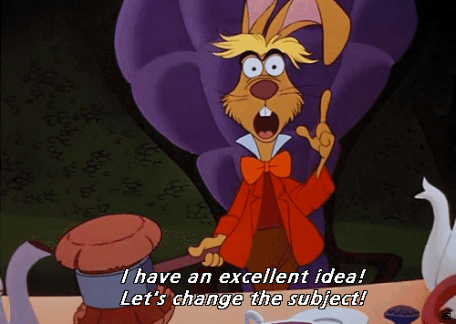
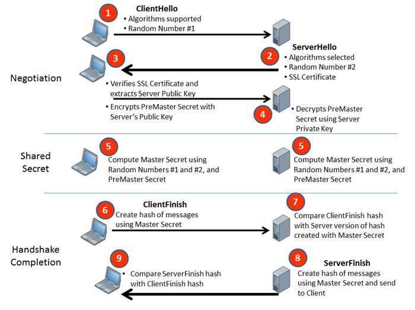
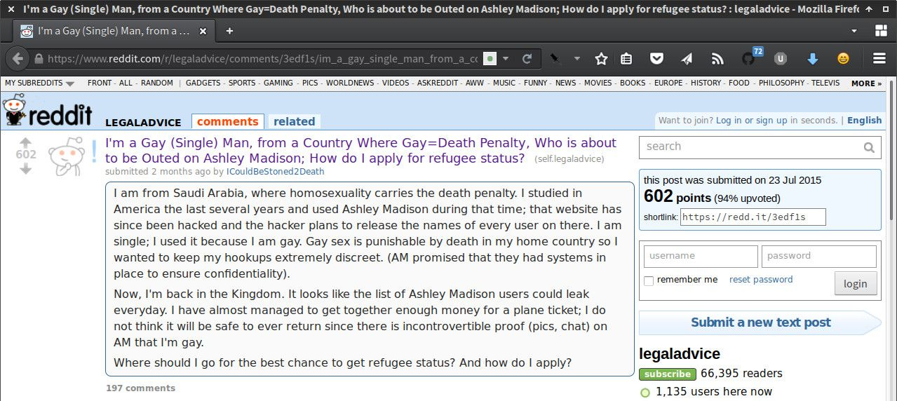

La Crypto
pour les Devs

Cozy Cloud
La responsabilité du développeur
la limite des mots de passe :
l'interface CC
m'en fous, on n'héberge pas de données sensibles…
(╯°□°）╯︵ ┻━┻
une seule solution
Chiffrer !
(ou crypter, troll inside)
- guerre de l'information
- tracking et recroisement
- identité numérique
Aucune donnée sensible ne devrait circuler ou être stockée en clair
Chiffrer ?
chiffrement

plus question de reculer
NSA / Prism
la Crypto, ça n'est pas
- l'authentification
- la sécurité
- la révocation
objectif: Protéger les informations sensibles
la Crypto, c'est
- Hash
- Encryption
- Échange de clés
- Signature
Seule la clé est importante
(l'algo on s'en fout)
Cryptographie & Cryptanalyse
il était une fois…
le Code César
le chiffre de Vigenère

Plaintext: ATTACKATDAWN
Key: LEMONLEMONLE
Ciphertext: LXFOPVEFRNHR
la faille : les répétitions
L'analyse des fréquences rend caduques toutes protections qui utiliseraient un dénominateur commun.
Enigma
le chiffrement numérique
la faille : l'espionnage et l'attaque par force brute
aucun système ne peut être suffisamment robuste pour résister éternellement à une attaque
La protection des clés est essentielle

Hachage, salage & entropie
Hachage
- calcul d'une empreinte identifiant la source
- non-réversible
- MD5 / SHA / BCrypt (blowfish)
Hachage :
obfuscation des données 👍
Problème :
les rainbow / lookup / reverse-lookup tables
Saler
- ajoute de l'entropie
- supprime les risques de répétition
- doit être unique et aléatoire
On ne fait pas :
md5(sha1(password))
md5(md5(salt) + md5(password))
sha1(sha1(password))
sha1(str_rot13(password + salt))
md5(sha1(md5(md5(password) + sha1(password)) + md5(password)))
On fait :
- génération d'un pseudo-aléatoire CSPRNG : le salt
- application une dérivation PBKDF2 (SHA256) / Bcrypt / Scrypt sur
[salt+pasword]avec une forte entropie - stockage du résultat et des paramètres de génération
Défendez-vous
un hachage sans répétition et en exécution lente limite sa surface d'attaque
Symétrique vs Asymétrique
chiffrement par bloc
- DES (Data Encryption Standard)
- AES (Advanced Encryption Standard)
-
Stream Cipher


padding & random
- ECB (Electronic Code Book)
- CBC (Cipher Block Chaining)
problème : les machines ne sont pas aléatoires
- besoin de données imprévisibles
- méthodes crypto CSPRNG
(pas/dev/urandomdirectement, utilisez les méthodes des libs crypto) - IV (Vecteur d'Initialisation)
(bytes-block utilisés en initialisation d'un algo de chiffrement pour assurer son caractère unique)
problème : une clé unique peut être compromise
une clé symétrique doit nécessairement circuler
Bob et Alice échangent leurs clés
Clés, certificats, signatures & chiffrement
clé symétrique
- clé unique pour toutes les opérations
- rapide
- sensible sur la clé
Diffie-Hellman
- sécurité supplémentaire sur les échanges
- clé publique commune
- secret partagé
PGP / GnuPG
- clés asymétriques (RSA) sur clé symétrique (IDEA)
- chiffre (clé publique) et signe (clé privée)
- utilise l'entropie fournie par l'utilisateur
- la Crypto pour tous
Signature
- asymétrique inversée
- pas de sécurisation ; identification
Certificats
- authentifie un client auprès d'un tiers de confiance
- assure la révocation
- Let's Encrypt
les standards
Protéger
le réseau
- SSL / TLS 
- Confidentialité persistante
les accès : password hash
les données
- RSA
- Symétrique encapsulé
- Boitiers HSM
Webcrypto à la rescousse ?
Before (reading the spec)

After (reading the spec)

Current status :
- Working Draft
- Spec obscure pour les néophytes
window.crypto
window.crypto.subtle
window.crypto.subtle.encrypt
window.crypto.subtle.encrypt(
{
name: "RSA-OAEP",
},
publicKey, //from generateKey or importKey
data
)
window.crypto.subtle.encrypt(/* ... */)
.then(function(encrypted){
//returns an ArrayBuffer containing the encrypted data
console.log(new Uint8Array(encrypted));
})
.catch(function(err){
console.error(err);
});
WebCrypto API
- n'utilise que des Promises
- ne traite qu'avec des sources binaires (ArrayBuffers)
point bonus : comme avec canPlayType
- RSASSA-PKCS1-v1_5 / RSA-OAEP
- AES-CBC / AES-GCM / AES-KW
- HMAC
- SHA-256 / SHA-384 / SHA-512
les navigateurs n'implémentent que les algos qu'ils estiment nécessaires
Alors, on fait quoi ?
Ne jouez pas les apprentis sorciers
n'oubliez jamais que :
- la sécurité est inversement proportionelle à la simplicité d'utilisation
- toute sécurité a un coût
On arrête d'avoir peur, et on protège !
Questions ?
Merci
Iconographie / Médias :
- Algorisme : by Laurent Chemla
- Chiffre de Vigenère : source wikipedia
- Enigma : source Nothern Ireland War Memorial
- XKCD : Security
- Diffie-Hellman Key exchange : source wikipedia
- SSL Diagram : source IdenTrust
Fontes :
- Titrage : Ed Interlock
- Labeur : Overlock
- Monospace : Source Code Pro
//talks.m4dz.net/crypto-pour-les-devs/
disponible sous licence CC BY-SA 4.0